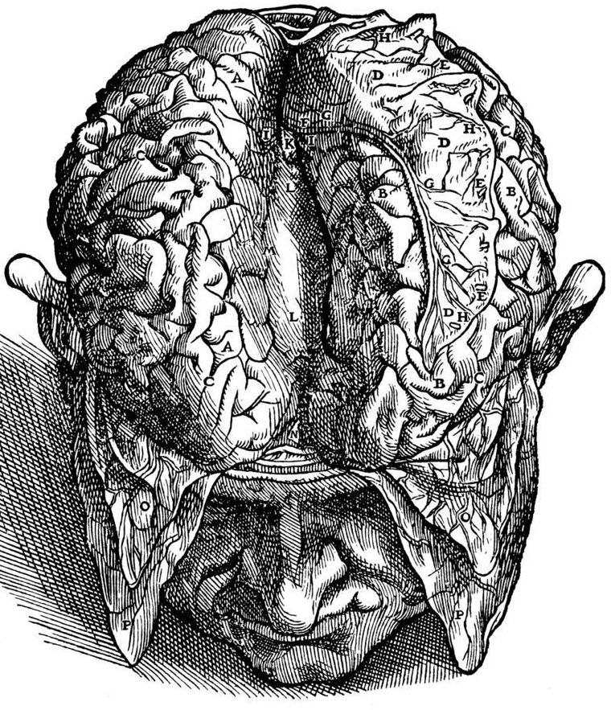
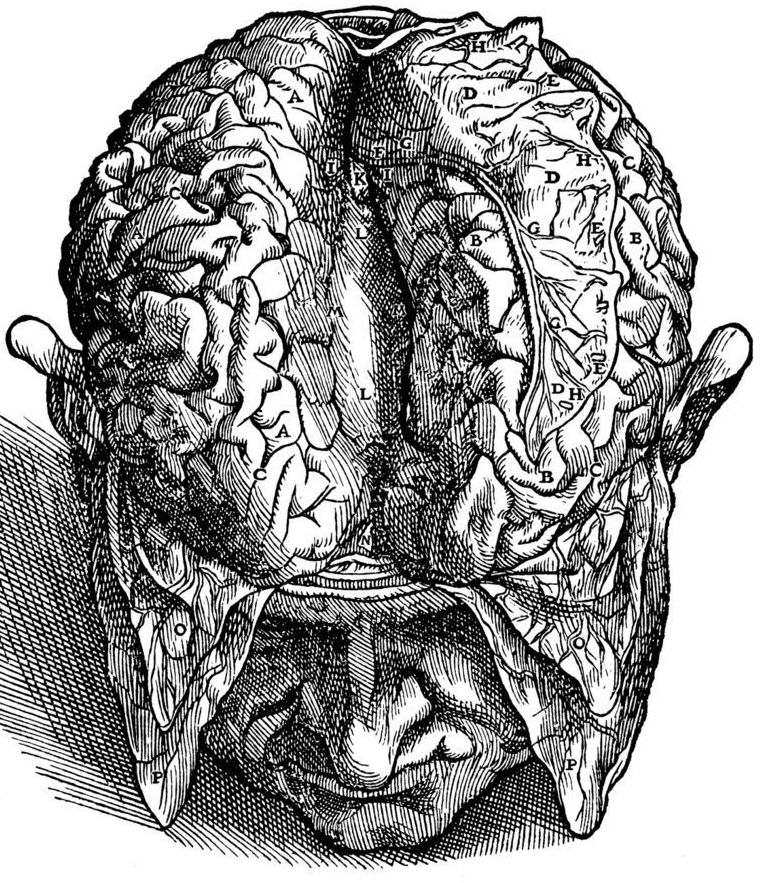

Text For BIO400 Neuroanatomy at Salem State University
Welcome
This is a Text for the Neuroanatomy course (BIO400) at SSU

This work is licensed under the Creative Commons Attribution-Share Alike 3.0 Unported United States License.
This is a Text for the Neuroanatomy course (BIO400) at SSU

This work is licensed under the Creative Commons Attribution-Share Alike 3.0 Unported United States License.